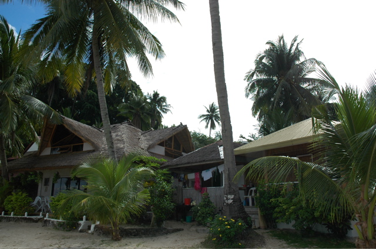
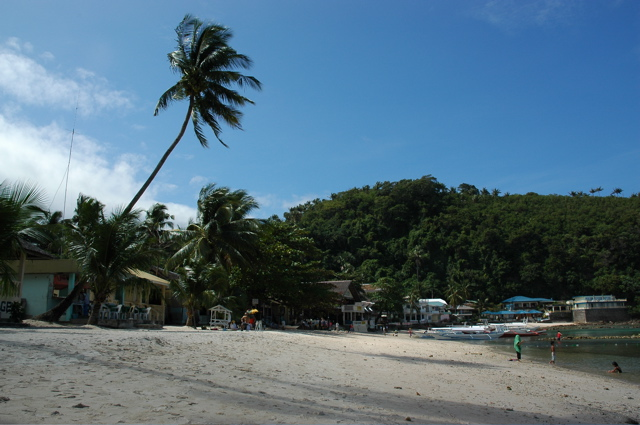
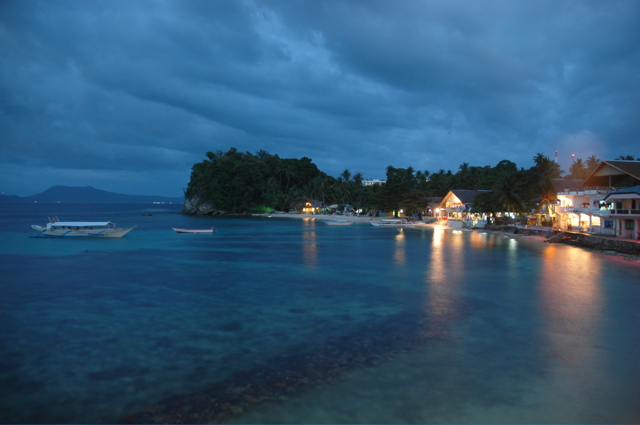
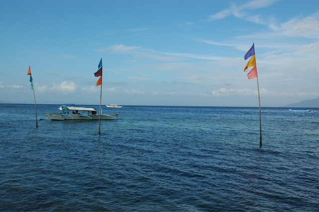
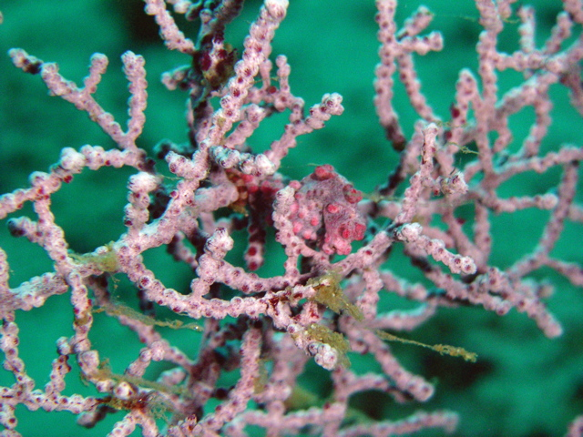
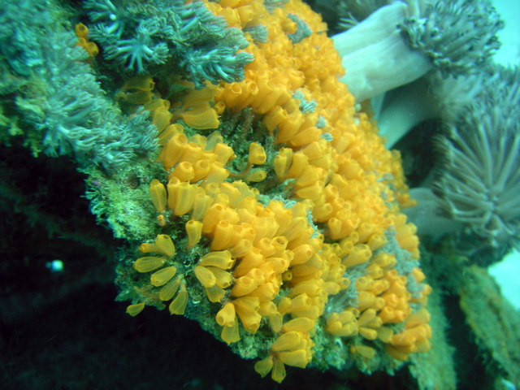

Am Big La Laguna Beach haben wir trotz Belagerung durch Hoteleigentümer-Verwandten eine sehr hübsche Hütte gefunden. Der Strand ist zwar nicht riesig, aber hier läßt es sich erstmal eine Weile aushalten. Das Zimmer hat nicht nur eine Kochzeile und einen kaputten Fernseher, sondern auch eine kleine Terrasse mit Meerblick. Die Stufen enden im Strand - sehr schön.
 
Der erste Schnorchelausflug an zwei Felsen in unserer Bucht hat das Meer hier als vielversprechendes Tauchrevier ausgewiesen. Morgen werden wir uns auch mit Luftflaschen unter Wasser wagen.
Jetzt warten wir noch auf das Neue Jahr und sind gespannt, ob die knallwütigen Einheimischen unsere Hütte in die Luft jagen.
Frohes Neues Jahr!
02/01/2006
Wir haben Glück gehabt: die Hütte steht noch. Das liegt aber weniger an der hier verballerten Menge Sprengstoff, sondern vielmehr an der Ungeduld der Leute, die ihr Pulver schon über den ganzen Tag verteilt verschossen hatten. Um Mitternacht blieb gerade noch genug für ein schönes kleines Feuerwerk.
Das neue Jahr haben wir mit einem Tauchgang direkt in unserer kleinen Bucht begonnen. Der erste Eindruck, den wir beim Schnorcheln gewonnen hatten, hat sich bestätigt! Es gibt hier zwar nichts großes zu sehen, dafür sind die kleinen Tiere um so schöner. Endlich konnten wir einen Blick auf einen winzigen Gelbbraunen Kofferfisch werfen. Bei einem weiteren Tauchgang heute haben wir zwei Wracks umtaucht, in deren Nähe es Anglerfische, Drachenköpfe und Seepferdchen gab.
Ansonsten lassen wir uns die meiste Zeit am Strand von der Sonne austrocknen oder von kleinen Regengüssen erfrischen. Dementsprechend verschieben wir unsere Abreise immer weiter nach hinten.
05/01/2006
Weil wir immer noch faul sind und am Strand liegen wollen, haben wir die wohl beschwerliche Tour zu den Reisterrassen im Norden gestrichen und sind immer noch am Big La Laguna Beach.
Beim letzten Tauchgang konnten wir einen lang gehegten Wunsch erfüllen und einen Blick auf Zwergseepferdchen werfen: Die elenden Viecher wären gut sichtbar gewesen, wenn sie wenigstens so groß wie ein Fingernagel wären. Stattdessen sind sie noch kleiner und verstecken sich in einem Korallenfächer in 30m Tiefe. Wegen der starken Strömung konnten wir nur kurz vor ihrem Habitat herumstrampeln - gerade lang genug, um sie zu entdecken. Fotos von diesen Seepferdchen anzusehen ist ein lohnenswerterer Zeitvertreib.
 
Als unangenehmen Nebeneffekt hat Ali einen ordentlicher Schnupfen mitgenommen. Deshalb haben wir hier keine weiteren Tauchgänge unternommen. Um die daraus entstehende Eintönigkeit des Strandlebens zu mildern haben wir einen Ausflug zum Talipanan Beach gemacht. Im Reiseführer wird er Reisenden empfohlen, die es ruhiger mögen. Tatsächlich ist es dort dermaßen ausgestorben, dass man von längeren Aufenthalten absehen sollte. Allerdings gibt es dort bei Luca leckere Pizza.